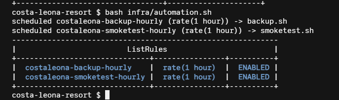
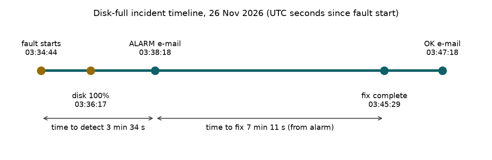
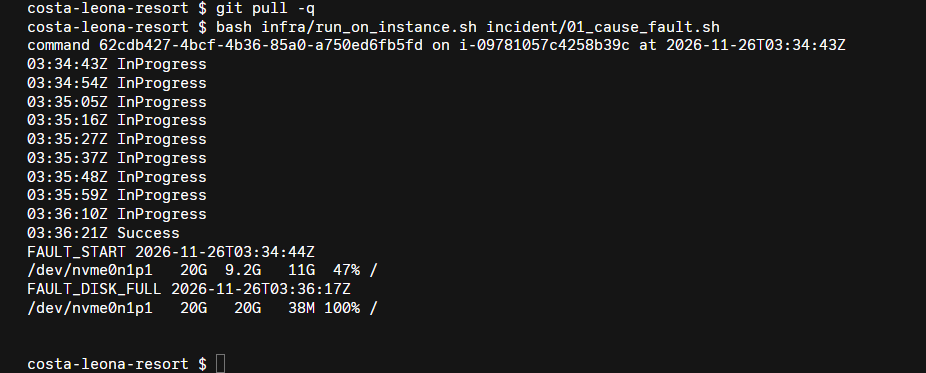
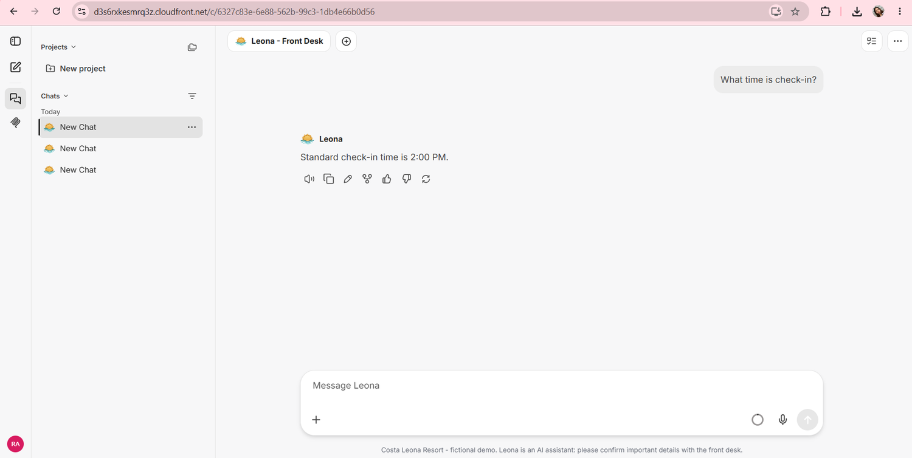
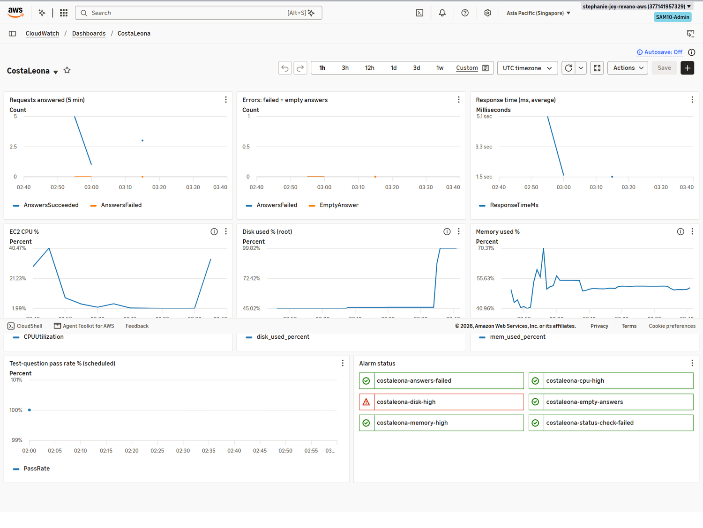
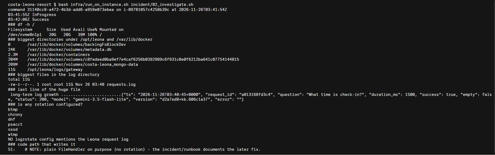
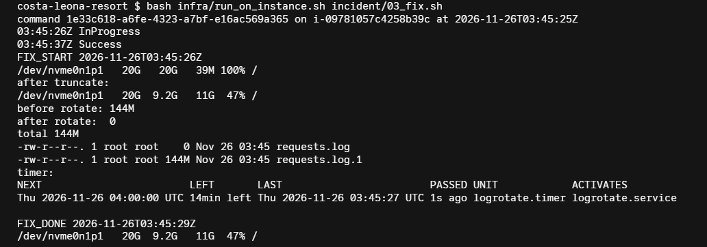
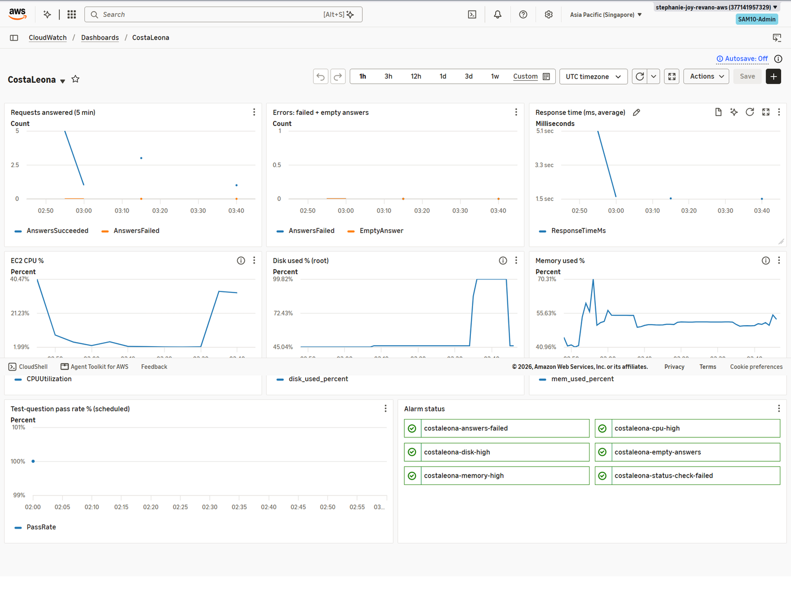

Automation
Two automations run with nobody touching them. EventBridge fires a rule, SSM Run Command runs a script on the instance (only instances tagged Project=SAM10 and Role=web), and the script writes one timestamped line to /var/log/leona-automation.log (shipped to CloudWatch Logs). Code: automation/backup.sh, automation/smoketest.sh and infra/automation.sh in the repository.
Database backup, every hour
Dumps MongoDB, streams it to S3, logs the size.
Test-question run, every hour
Asks Leona 5 test questions, publishes the pass rate to CloudWatch, e-mails me if it falls below 80%.
Hourly instead of nightly so that two unattended runs fit inside the project window; in production the backup would stay hourly and the test run could be nightly.
| Backup runs (timestamps) | Test-question runs (timestamps) |
|---|---|
|
|



The incident: disk full
Fault chosen from Appendix E ("disk full"). I created it on purpose in my own account: I appended synthetic lines to the application's request log until the root disk was full, then watched my own monitoring notice.

- 03:34:44Disk 47%, 11 GB free.
- 03:36:17100%, 38 MB free.
- 03:38:18Time to detect: 3 min 34 s.
- 03:41:54Largest directory and file found.
- 03:45:29Disk back to 47%. Time to fix: 7 min 11 s from the alarm.
- 03:47:18Resolution e-mail received.
What I saw
The site kept answering at 100% disk: a latent outage, surviving on the last 38 MB, with writes (logs, new chats) one step from failing. The alarm gave me the warning before any guest saw an error.





Root cause
requests.log) was written by a plain file handler with no rotation and no size limit, so it grew without bound (11 GB of the 20 GB disk), which filled the root disk. Evidence: du ranks that one file at 11 GB (MongoDB 209 MB, containers 2.3 MB); no logrotate rule mentions it; app.py lines 51-52 show the handler.
Fix and prevention
- Fix: trim the log to its last 2,000 lines: disk 100% → 47%.
- Prevention: a logrotate rule (rotate above 100 MB, keep 3 compressed copies,
copytruncate) with the timer set to hourly; also part ofinfra/start.sh, so any rebuilt server has it. The root-cause metric already has an alarm (disk used >85%). - Verification: a test run rotated a 144 MB log to 0 bytes; the alarm cleared at 03:47:18.


Runbook
# RUNBOOK: root disk filling up (disk-high alarm)
Owner: operator Last tested: 2026-11-26 (during the incident) Takes: 10 minutes Ask: -
1. WHAT THIS IS FOR
Free disk space on the web instance before the app stops saving chats and logs.
2. HOW YOU KNOW YOU NEED IT
E-mail "ALARM: costaleona-disk-high" (disk used above 85%), or the dashboard disk tile is red.
Command that shows it: df -h /
3. WHAT IT AFFECTS
Guests: at 100% the site may stop saving chats or fail on the next write. Until then they notice nothing.
4. HOW TO DO IT
Step 1: from AWS CloudShell run bash infra/run_on_instance.sh incident/02_investigate.sh
-> you should see which directory is biggest (here /opt/leona/logs/gateway, one file requests.log)
Step 2: bash infra/run_on_instance.sh incident/03_fix.sh
-> you should see the disk percentage drop and "FIX_DONE"
5. HOW TO CHECK IT WORKED
- [ ] df -h / shows well below 85%
- [ ] ask Leona "What time is check-in?" and get "2:00 PM"
- [ ] OK e-mail for costaleona-disk-high within about 5 minutes; no new alarms for 10 minutes
6. HOW TO UNDO IT
03_fix.sh keeps the last 2,000 log lines and only touches requests.log; rotated copies are in /opt/leona/logs/gateway.
Remove /etc/logrotate.d/leona only if rotation itself misbehaves.
7. GOTCHAS
- AWS CLI v2 pages long output with "less": press q, or set AWS_PAGER="".
- Do not delete files in /var/lib/docker by hand; MongoDB data lives there.
- CloudShell paste can fail in some browsers; type the short commands instead.
8. CHANGE HISTORY
2026-11-26 - created after the disk-full incident; log rotation added to infra/start.sh.